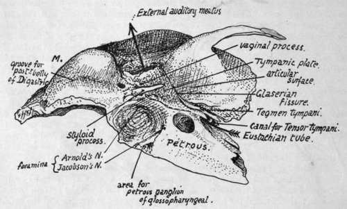
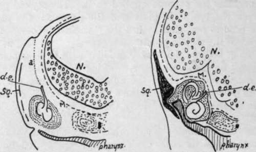

Temporal. Part 2
Description
This section is from the book "The Anatomy Of The Human Skeleton", by J. Ernest Frazer. Also available from Amazon: The anatomy of the human skeleton.
Temporal. Part 2
As soon as the student comprehends the way in which the complete bone is put together, he can proceed to recognise the various parts and their necessary relations in the adult bone. Look at the bone from below ; the Glaserian fissure (Fig. 173) is easily recognised at the bottom of the hollow where the jaw articulates. Behind it is the tympanic plate forming the bony meatus ; in front of it is the articular surface of the squama, while the edge of the tegmen appears in the inner part of the fissure. The styloid process has the inner and back part of the plate heaped up against its outer and front aspect, constituting the vaginal process. On the inner side of the styloid and tympanic plate the mass of the petrous is directed forwards and inwards. It is clear, from study of Fig. 172, that the Eustachian tube must emerge from the bone between petrous and tegmen, separated from the squama by the tegmen, and above and internal to the inner part of the tympanic plate ; examine the bone (Fig. 173), and the opening for the tube can be found in this position, in the angle, roughly speaking, between the petrous and squama, but really separated from the latter by the thin lamina of the tegmen. There is really a double opening here, both leading to the bony tympanum and separated by a very thin layer of bone, the upper canal for Tensor tympani and the lower for the Eustachian tube. Now follow the margin of the squama where it is applied to the superficial aspect of the petrous bone, comparing the complete structure with the schemes in Fig. 172. Starting above the external meatus, the margin can be traced down in the Glaserian fissure, being here a squamo-tympanic suture, but in the inner and lower part of the fissure it becomes petro-squamous. At the inner end of this part it turns up on the upper surface, still separating the squama from the tegmen (Fig. 162), and passes back along here as the (upper) petro-squamous suture to the petro-mastoid region : it is generally obliterated wholly or in part in this region in the adult bone, but can be picked up again on the outer side of the mastoid process, running downwards and forwards (Fig. 175) towards the apex, near which it turns up once more and runs round the meatus, becoming squamo-tympanic. If the squama and tympanic plate were removed, the tympanic cavity would be exposed, partly covered by the Tegmen tympani, as can be understood from the schemes in Fig. 172. Thus the cavity would have its inner wall made by the outer side of the petrous, its outer wall by the tympanic ring and the membrane which this holds in position, its roof by the tegmen, and the ossicles would be enclosed between these structures : we have already seen that the upper end of Meckel's cartilage forms the malleus, the stapes is developed from the upper end of the styloid bar, and the incus is made from a condensation continuous with that of the malleus. The backward extension of the cavity that forms the mastoid antrum goes back beyond the region of the ring and Membrana tympani, so that its outer wall is formed by squama.
Fig. 173.-Lower aspect of temporal bone. The arrow passes in at the Eustachian opening and out at the external meatus ; such a passage would only be possible when the tympanic membrane is absent. M., mastoid process.
The outer surface of the petrous portion, where it is not in relation with the tympanum and antrum, has the squama apphed to it. The styloid process appears on the surface between the tympanic plate and the petrous : the plate in its growth spreads along the process and thus makes the " vaginal process," which therefore is outside and in front of the styloid process.
The student must become thoroughly familiar with these general relations of the parts of the temporal bone to each other, working them out from different points of view without troubling himself about the numerous foramina, etc., that he observes on the bone, before proceeding to study the specimen in detail, for only by this means will he be able to understand it and have the key to the many-sided intricacies of its structure.
The petrous part of the temporal is somewhat wedge-shaped, with its apex projecting forwards and inwards and its base, cut obliquely, represented by the thick petro-mastoid region of the bone. It has four sides : (a) outer or anterior, covered by squama save where it forms the inner wall of tympanum ; (b) lower, seen on the basal surface of the skull; (c) upper ; and [d) inner or posterior. Dura mater covers (c) and (d), which are respectively seen in the middle and posterior fossae of the cranial cavity. The apex fits in between the great wing of the sphenoid and the region of the basi-sphenoid and basi-occiput. The lower surface is really infero-internal; compare the separate bone with the complete skull, and it is seen that the inner part of the surface is overlapped by the edge of the occipital, the remainder being visible from below. Thus we find an articular surface internally, coated by a thin layer of cartilage in the recent state, for the occipital, and behind this a jugular fossa, completed by the occipital, and converted into the jugular foramen. In front of the fossa, on the exposed part of the surface, is the rounded opening of the carotid canal that receives the internal carotid and the ramus caroticus of the superior cervical ganglion.
The artery is taken into the petrous bone secondarily ; it is at first below the otic capsule, as shown in the first two drawings in Fig. 172, running forward over the tubo-tympanic recess. Later, as the ossification spreads, it encloses the artery, but the vessel retains its relation to the tubo-tympanic region (see later, p. 226).
The jugular fossa is frequently very deep, lodging the " bulb " of the vessel : the plate of bone that makes its floor is concerned, with the tympanic plate, in forming the floor of the tympanic cavity.
In front of the carotid opening and rather internal to it the surface is related to the lateral recess (fossa of Rosehmuller) of the pharynx, and some fibres of Levator palati arise here : immediately outside this is the outer surface of the bone, and here the cartilaginous part of the Eustachian tube is running downwards, forwards and inwards from its bony opening. This portion of the tube is fastened by firm connective tissue to the bone in the neighbourhood.
The minute foramen that transmits the tympanic branch of the glosso-pharyngeal nerve is on the bony crest between the arterial and venous foramina : the ninth nerve, with the tenth and eleventh, lies in the front part of the jugular fossa, therefore just behind the artery immediately below the base of the skull. The little petrous ganglion of the ninth nerve lies in contact with the petrous on a small triangular surface of bone by the antero-internal angle of the jugular fossa (Fig. 173).
The petrous and tympanic plate meet along the outer margin of the jugular fossa, and thus a crest is formed here by their growth in apposition : this makes the vaginal process, so that the base of the styloid process and its vaginal sheath may be said to project immediately external to the jugular fossa or foramen.
A small foramen for the posterior auricular branch of the vagus is near this outer part: in the foetus the nerve is not enclosed in the bone, but is taken in later as the tympanic plate and petrous increase in size.
Fig. 174.-To show how the ductus endolymphaticus comes to He on the inner side of the petrous, i is a section like Fig. 172, and in it the early brain N. is seen with its membranes M. Outside this the otocyst has come to rest on the roof of the tubo-tympanic recess of the pharynx, having descended from the dorso-lateral surface where the notch is seen ; its track is marked by a, the part which disappears, and d.e., which is the drawn-out stalk of the otocyst and becomes the ductus. In 2 it is seen that the growth of the upper and back part of the otocyst to form semicircular canals has, with the accompanying growth of the capsule (petrous), left d.e. on the inner side, while the growth of N. has pushed M. against and above the capsule so that the ductus now lies between bone and membrane. Sq., plane of squama.
The remainder of the lower surface extends backwards and outwards behind the jugular fossa to form the basis of the mastoid region. The thick inner margin of this region is also slightly overlapped by the occipital, so that the articular area immediately behind the fossa looks downwards as well as inwards : this is the part that in the first half of life is separated from the outer end of the jugular process of the occipital by a thin plate of cartilage.
The lower aspect of the mastoid portion shows a deep groove for Digastric just internal to the mastoid process, and part of a groove for the occipital artery internal to this along the sutural margin. The artery runs to the base of the skull along the deep surface of the posterior belly of the muscle, so its groove begins just internal to that for the Digastric. At the front end of the digastric groove is the stylo-mastoid foramen.
Continue to:
- prev: Temporal
- Table of Contents
- next: Temporal. Part 3